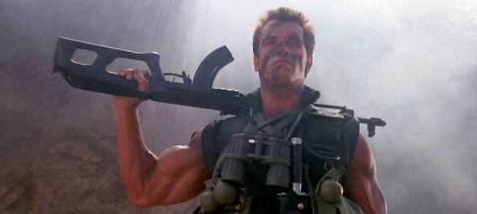

🌴 💪 💣 COMMANDO (1985) — CERTIFIED MGC VF-33

⚖ MGC INITIAL INQUEST: COMMANDO (1985)
- ASSET TITLE: Commando (1985) — The Val Verde Garden-Shed Arsenal & Yellow-Porsche Ledger
- OFFICIAL REGISTRY GRADE: GRADE
- JURISDICTION: Lower Tribunal Room / 1980s High-Body-Count Action Docket
- PRESIDING FORENSIC EXAMINER: Judge Dex, Chief of R&D & Action Judge
- CASE FILE: #075
📜 The Initial Bench Assessment
Under the 5x numismatic lens, Mark L. Lester and Arnold Schwarzenegger’s 1985 action benchmark is pure, uncut 1980s drive-in entertainment—delivering iconic one-liners (“Let off some steam, Bennett”), muscular pacing, and relentless explosive velocity. However, once the nostalgic adrenaline settles, the specimen exhibits blatant cartoon ballistics, continuity magic, and zero tactical realism that anchor it squarely in the circulated VF-20 to VF-37 race-car tier:
🚨 The 3-Flaw Defect Log:
1. The Garden-Shed Infinite-Ammo & Ballistic Physics Void (Combat Realism Wear)
The Defect:
After raiding a single suburban surplus store and garden shed, John Matrix single-handedly wipes out an entire private army of over 80 heavily armed mercenaries on an island compound without ever reloading on screen, taking cover, or catching a single lethal round in open daylight.The Forensic Data:
Sliding the 5x lens across the climactic compound assault reveals pure video-game god-mode mechanics—enemies politely run out from behind concrete cover into open gunfire while Matrix hip-fires a belt-fed M60 like a featherweight toy.
2. The Self-Repairing Yellow Porsche Continuity Scuff (Technical Planchet Flaw)
The Defect:
During the chaotic Los Angeles chase sequence, Sully’s bright yellow Porsche 911 is violently flipped, crushed down the entire passenger side, and dragged across asphalt—only to magically appear completely pristine and dent-free seconds later when Matrix drives off in it.The Forensic Data:
Even without a magnifying loupe, the glaring continuity error breaks physical immersion and highlights the fast-and-loose 1980s production polish.
3. The Chainmail-Vest Villain & Commercial-Airliner Logic Gap (Antagonist & Plot Friction)
The Defect:
Vernon Wells’s villain Bennett—sporting a knitted chainmail tank top and mustache—trades machine guns for a knife fight strictly out of ego, while Matrix’s escape from a commercial airliner by dropping out of the wheel well into a swamp right before takeoff defies basic aviation security and physics.The Forensic Data:
While endlessly entertaining as pure 1980s camp, the cartoonish villain wardrobe and impossible airport escape firmly separate Commando from grounded tactical thrillers in the XF or AU vaults.
⚖ THE FINAL JUDICIAL DECREE
- With all three ballistic, continuity, and logical defects permanently locked on the record, the 1980s one-man-army adrenaline is calibrated cleanly against reality. While iconic one-liners, muscular pacing, and explosive drive-in entertainment value keep the specimen comfortably in the upper half of the race-car tier, the infinite-ammo garden-shed raid, self-repairing yellow Porsche, and chainmail-vest villainy prevent any promotion into the XF wine-glass register.
- Permanently sealed in the archives as a Certified MGC VF-33 Choice Circulated Specimen. Case #075 is officially closed. 🏎️🌴💪💣

• © 2026 MOVIE GRADING CONSENSUS. All Sovereign Rights Reserved.